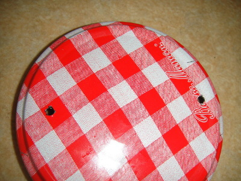
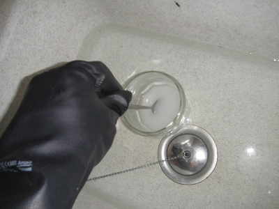
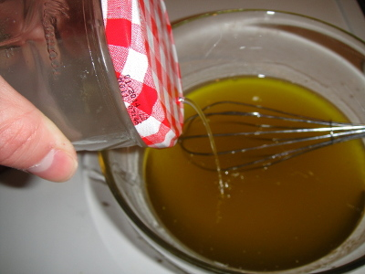
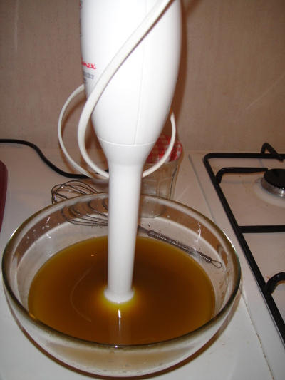
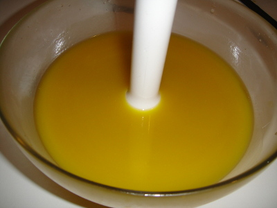
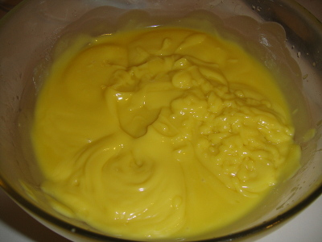
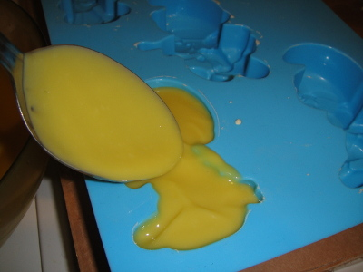
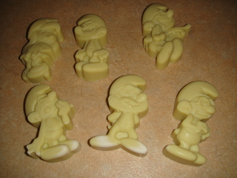

Hein!?
Nous allons nous intéresser à la fabrication du savon. Nom de dieu ! On va enfin pouvoir laver la bouche des menteurs !
Ce n’est pas bien compliqué. Il faut être un minimum rigoureux et avoir un peu de matériel de cuisine.
Le matériel
Pas grand chose, mais quand même:
- Des lunettes de protection (que vous trouverez en magasin de bricolage)
- Des gants de protection chimique (ce sont des gants type vaisselle, mais renforcé; magasin de bricolage)
- Des vêtements qui ont déjà bien vécu
- Un saladier en verre
- Un pot à confiture vide
- Un fouet
- Un thermomètre
- Un moule en silicone (ou un petit pot mou qui sert à préparer les gâches de plâtre ; magasin de bricolage)
- Mixer à soupe (type plongeur)
Le matériel de protection est obligatoire ! C’est trop bête d’avoir des soucis de santé à cause de projection de soude parce qu’on a voulu économiser quelques euros.
Les ingrédients
Le savon est issu de la réaction chimique de saponification. Elle met en scène une graisse végétale ou animale et de la soude. On va faire au plus simple avec de l’huile d’olive :
- Huile d’olive extra vierge (la moins cher)
- Des pastilles de soude (rayon droguerie des magasins de bricolage). Attention, la soude, c'est de l'hydroxyde de sodium et rien d'aure. Certain magasins vous vendent des produits qui ne sont pas de la soude (marque verte et blanche pour ne pas la citer)
- eau (du robinet)
- Huile essentielle (facultatif)
Les précautions
Attention, vous allez manipuler de la soude caustique. C’est dangereux. Surtout en cas de projection dans les yeux (migration de la soude à l’intérieur de l’oeil). Portez les lunettes de protection ainsi que les gants pendant toute la préparation du savon.
Lorsqu'on dilue de la soude caustique avec de l’eau, il faut verser les pastilles de soude dans l’eau et pas le contraire !
Préparatifs
Commencez par faire deux petits perçages (avec un clou ou tout autre objet contondant) diamétralement opposés sur le couvercle du pot à confiture; ces perçages ne dépasseront pas 2mm de diamètre.

Ce pot vous servira pour verser petit à petit la soude dans l’huile.
Recette
C’est parti ! Rendez-vous sur le site mandrulandia (http://calc.mendrulandia.net/?lg=fr) pour calculer la recette. Nous voulons un savon surgras à 8%. De cette manière on est sûr de consommer toute la soude et on ne se cramera pas la peau en se lavant avec. Sélectionnez votre huile (huile d’olive vierge) et indiquez la masse (500g). Mettez le surgraissage à 8% et on obtient:
- 500g d’huile d’olive vierge
- 64g de soude caustique
- 165ml d’eau (soit 165g)
- 36 gouttes d’huiles essentielles (facultatif)
Protocole
Soyez précis dans vos pesées !
Pesez l’huile et mettez l’huile à tiédir
La température finale sera 40°c
Mettez vos lunettes et gants
C’est super important
Dilution de la soude
! ATTENTION ! c’est dangereux.
- Remplissez votre évier d’eau froide (5cm de profondeur)
- Mettez 165ml d’eau froide dans le pot à confiture
- Placez le pot dans l’évier, à tremper dans l’eau
Verser les pastilles de soude et mélangez avec de l’inox ou du verre (pas d’aluminium !)
Ne respirez pas les vapeurs, c’est dangereux La solution subit une forte élévation de température; c’est pour ça que l’on fait tremper le pot dans l’eau froide
Bouchez le pot avec le couvercle percé
- Laisser la température chuter à 40°c

Façon vinaigrette, incorporez la solution de soude dans l’huile sans cesser de remuer au fouet
Votre mélange devient immédiatement translucide

Mettez le mixer à soupe dans le futur savon
Veuillez faire en sorte que le plongeur plonge bien dans la mixture pour éviter les éclaboussures.

Mixez
Faites par intermittence si vous ne voulez pas cramer le moteur de votre mixer. Le but est d’obtenir une consistance de mayonnaise.

Ajoutez les huiles essentielles
Ne les ajoutez qu’à la fin pour que ce soit en priorité l’huile d’olive qui réagisse avec la soude.

Moulez
Utilisez des moules en silicone, sinon, ce sera la galère pour démouler.

Finir la saponification
Maintenant, il faut garder tout ça au chaud pendant 24 heures. Mettez dans une glacière avec une bouteille d’eau chaude. Pour ma part, j’ai un four qui tient les 40°C. J’enfourne et j’allume le four pendant 2minutes toutes les 2 à 4 heures. Au bout des 24 heures, c’est dur mais fragile et vous pouvez démouler délicatement.

Laissez murir
Il faut attendre quelques semaines. Sans ça, votre savon vous durera pas longtemps car il fondra en gélatine au contact de l’eau